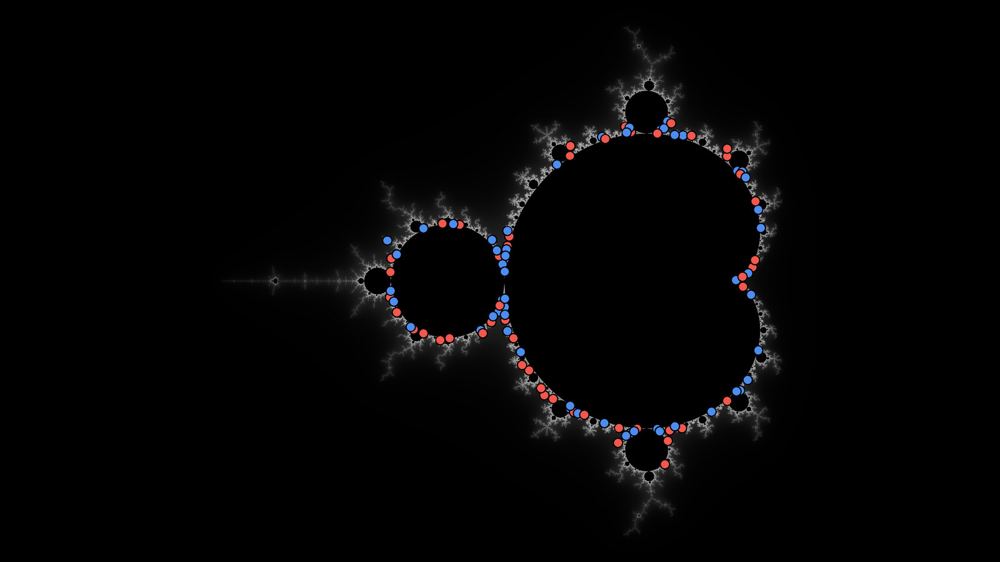

Every location the search has kept sits somewhere in one of the fractal families,
and a family is a picture in its own right. This section maps them: each family drawn
whole, with the locations the pipeline has found marked on it, so that where the good
ground lies, and where the search has never brought anything back, can be looked at
rather than tabulated. Each mark opens at the view it stands for.
The atlas itself is built, on the search's own record: every place the search kept, drawn on the plane it came
out of. The figure below is that plane and those marks; the page behind it gives every
mark its pictures and its links.

Draft Every place the search has kept, on the plane it came out of. A place is here because at least one render at it scored above the bar a gallery solve seats over, and nothing else puts a mark on this plate. One mark stands for one neighborhood: 107 of them, thinned from 1,059 places by dropping anything that landed within twelve pixels of a mark already drawn. Blue is a location on the parameter plane itself; red is a Julia location, which is a value of c, and c is a point of this same plane, so both halves of the search are drawn together: 57 blue and 50 red. The search has spent its whole life on the boundary, and at this scale that is most of what there is to see. Every one of them carries three pictures and three links on the atlas page.
Not written yet. This page holds the section's slug, which is a permanent
URL. The search whose finds it will map is in
fractal-wallpapers.